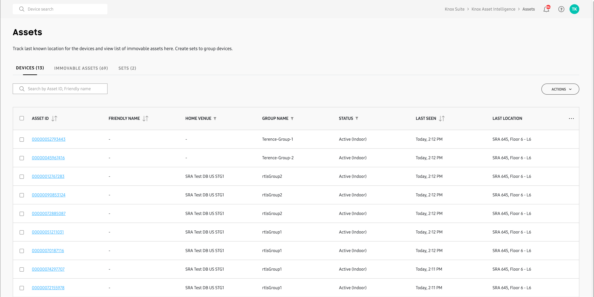

Manage assets
Last updated September 6th, 2023
The Location Assets page lets you quickly see the location status and last known update times for all of your enrolled devices. The Assets page is divided into two tabs: DEVICES and IMMOVABLE ASSETS.
- Devices — Your mobile devices (smartphones and tablets). See the Location Overview page for a full list of devices that support outdoor and indoor location tracking features.
- Immovable assets — Wi-Fi access points (APs) and similar devices that provide indoor location tracking capabilities.
- Sets — Your location-tracking devices organized into logical collections.

Upload assets
The Devices on the Assets page are uploaded through the normal device upload process documented on the Manage devices page. For Immovable assets, since they are used purely for indoor location tracking purposes, you upload these assets when you create an indoor location tracking Venue. See Create venues to learn more.
Sets
Sets are logical collections of devices that help make map filtering and indoor location tracking analytics easier. Sets exist only within the Dashboard’s Location module, and function similarly to device-groups, but with the following differences:
- Sets can be created on the console, whereas groups can only be created by uploading a CSV file or through an EMM.
- The same device can exist in more than one set, whereas a device can only exist in one group.
A default set (S.0) containing all devices is automatically created for all customers using the indoor-location tracking feature. You can created additional Sets based on your requirements.
To create a set:
- On the Assets page, click the SETS tab, then click NEW SET. The Add devices to new set page opens.
- Select one or more devices from the list, then click ADD. You can also use the search bar to find devices before adding.
- In the Create new set dialogue, give your set a name and optional description, then click ADD. The name can only contain alphabet, number, dash, or period characters, and cannot be more than 18 characters in length.
- Navigate back to the SETS tab to view a list of all sets in your fleet.
To edit your set information:
- Click a SET ID from the list. A side-panel displays your set information.
- Click Edit to change your set name, use to toggle to make the set Active or Inactive, or click DELETE SET to remove it entirely.
To add devices to a set:
- Select a set from the list, then click the ACTIONS > Add devices to set.
- In the Add devices page, select the devices from the list, then click ADD.
To remove devices from a set:
- Select a set from the list, then click the ACTIONS > Remove devices from set.
- In the Add devices page, select the devices from the list, then click REMOVE.
To delete multiple sets at the same time:
- Select the sets from the list, then click the ACTIONS > Delete set(s).
- In the Delete set(s) dialogue, click CONFIRM.
The default set (S.0) is created automatically for all customers using indoor-location tracking. This set can’t be deleted.
To download your sets information as a CSV file, select the one or more sets from the list, then click the ACTIONS > Download CSV.
View asset information
Viewing asset information from the Location dashboard is similar to viewing device information from the Devices page. Simply select either the DEVICES or IMMOVABLE ASSETS tab, then in the list of assets, click an ASSET ID to open a sliding panel with details about the asset.
If you have many assets in your list, you can quickly find an asset by entering its IMEI or serial number in the search field.
Find an asset
The Assets page provides several tools to help find devices in the real world easier. With these tools, you can force the device to play a sound, vibrate, or turn on its flashlight for a set duration, and send notifications to device users with instructions to contact the company in the event the device is found.
The Find asset tools only work for mobile devices, and not immovable objects.
To find an asset:
-
On the Assets page, use the checkboxes to select one or more devices, then click ACTIONS > Find asset.
-
In the Sound field, set the alert volume level by moving the slider.
-
In the Vibrate field, toggle whether you want to force the device to vibrate (Default: Off ).
-
In the Flash light field, toggle whether you want to turn on the camera’s flashlight (Default: Off ).
-
In Battery saving mode, toggle on if you want to place the device in battery saving mode when an alert is sent (Default: Off ).
-
In Set time period for the triggers, select the duration that you want to trigger the alert for:
- Until the device is found — activates the alert until the device user responds to it.
- Set duration (Default: 30 minutes) — Determines the amount of time that the alert is active.
-
In SUPPORT CONTACT DETAILS, enter the name of your organization and a contact phone number. The users will see a notification asking them to call this number if the device is found.
-
Click FIND NOW to send the alert and notification to the selected devices.
Find asset user screen
After you click FIND NOW, the user sees a full screen notification on the device asking them to swipe to turn off the alarm. Doing so lets you know that the asset isn’t lost, and is still in use. In case the user misses the alert, a message appears in the notification panel that instructs them to contact you about their device.
If the device is lost and you’ve filled in your organization’s contact info, a button appears underneath the alarm with a contact number. The user can tap the button to call the number on the screen.

Get the latest location
If you want to get the last known location for a device without having to wait for its next update interval, you can use the Get the latest location feature. To do this:
-
On the Assets page, use the checkboxes to select one or more devices, then click ACTIONS > Get the latest location.
-
The Assets page will update and you will see:
- Update pending in the STATUS column for your queried device(s) if they are not active.
- An updated date & time in the LAST SEEN column and location information in the LAST LOCATION if they do respond.
On this page
Is this page helpful?